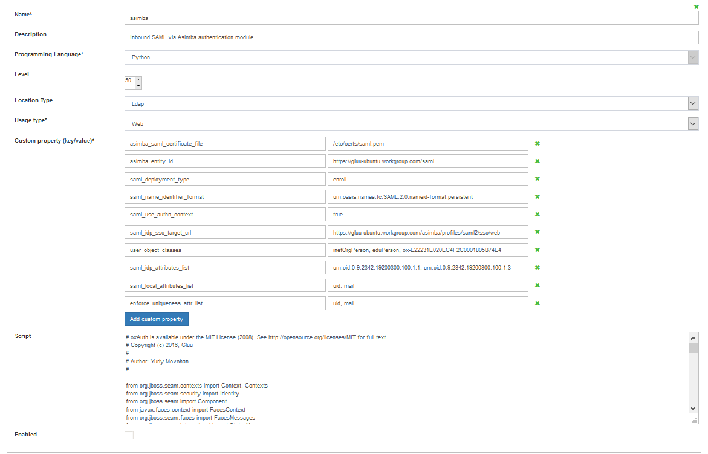

SAML#
Overview#
SAML is an XML-based, open-standard data format for exchanging authentication and authorization data between an identity provider (like the Gluu Server) and a service provider (like Dropbox, O365, etc.). SAML is a stable and mature standard, and is well supported at many of the Internet's largest domains. However, the last major release of SAML was in 2005! Therefore it is important to understand when to use SAML and when to use a newer protocol like OpenID Connect to achieve your identity goals.
Refer to these four considerations to determine which protocol to use for single sign-on (SSO):
- If you have an application that already supports SAML, use SAML.
- If you need to support user login at an external IDP (like a customer or partner IDP), use SAML.
- If you have a mobile application, use OpenID Connect.
- If you are writing a new application, use OpenID Connect.
If you are continuing with the SAML documentation it is presumed your use case aligns with one or both of the first two bullet points above. If not, we recommend that you review the OpenID Connect portion of the Gluu Server docs.
Outbound vs. Inbound SAML#
There are two main SAML authentication workflows: outbound SAML and inbound SAML.
Outbound SAML can also be called SP-initiated Single Sign-On (SSO) or traditional SAML. In an outbound SAML transaction a website or application (SP) redirects a user to a designated Identity Provider (IDP) for authentication and authorization. The IDP asks for the user's credentials and upon successful authentication redirects the user to the protected content.
Inbound SAML enables an organization to offer SAML authentication as a front door to their digital service. Inbound SAML is a common requirement for SaaS providers who need to support the authentication requirements of large enterprise customers.
The typical user flow for inbound SAML is as follows:
- User tries to access your protected resource;
- User is redirected to a discovery page (presented by your IDP) that presents one or more external IDP's where the user may have an existing identity (their "home IDP");
- User selects their home IDP and is sent for authentication;
- Upon successful authentication at their home IDP, user is redirected back to your service with access to the protected resource.
The Gluu Server bundles separate components to support both workflows (installation of each component is optional during Gluu Server deployment):
-
For outbound SAML, the Gluu Server bundles the Shibboleth SAML IDP.
-
For inbound SAML, the Gluu Server bundles the Asimba SAML Proxy.
Documentation for each service follows in the sections below.
Outbound SAML (Shibboleth)#
Outbound SAML can also be called SP-initiated Single Sign-On (SSO) or traditional SAML. In an outbound SAML transaction a website or application (SP) redirects a user to a designated Identity Provider (IDP) for authentication and authorization. The IDP will ask for the user's credentials and upon successful authentication, the user is sent back to the SP logged in.
In order for this transaction to happen successfully there must be pre-established trust between the IDP and the SP. In the Gluu Server, the IDPs SSO configuration is called a Trust Relationship (TR). The following sections cover how to create a TR in the Gluu Server.
Note
For any outbound SAML transaction, a trust relationship must be created in the IDP.
Trust Relationship Requirements#
Each Trust Relationship requires the infomation listed below.
Metadata of the SP
Metadata is an XML file which has configuration data used to establish trust between the website (SP) and IDP (Gluu Server). Websites (SP) can provide metadata via a URL or as a separate file. Metadata can change, so a static URL typically requires the least amount of ongoing maintenance.
Metadata of the Gluu Server
The Gluu Server's SAML metadata may be needed from time to time. It can be found at https://hostname/idp/shibboleth.
Attribute Release
Each SP may require one or more user attributes in order to grant a person access to a protected resource. Required attributes vary depending on the application, and should be explicitly listed in the target application's documentation. The Gluu Server ships with
certain preconfigured attributes and also supports the creation of custom attributes. Once the attributes are available in the Gluu Server, the administrator can use the oxTrust interface to release the necessary attributes to the SP (as described below). For a broader discussion of attributes, including how to create custom attributes, check the attributes section of the documentation.
NameID#
The default NameID for oxTrust generated SAML trust relationships is transientID. It's always a good idea to release the transientID as an attribute, as some SP's may not work otherwise. If there are other NameID requirements, a custom attribute must be created in oxTrust first before defining it as the NameID. Please review the custom attributes section of the docs to learn how to create custom attributes in oxTrust.
Defining NameID#
The template file for NameID definitions are located in the attribute-resolver.xml.vm file under /opt/gluu/jetty/identity/conf/shibboleth3/idp/.
The example below adds testcustomattribute as NameID based on UID attribute. The following are put into the attribute-resolver.xml.vm file.
- Add declaration for the new attribute
if( ! ($attribute.name.equals('transientId') or $attribute.name.equals('testcustomattribute') ) ) - Add definition for the new attribute
<resolver:AttributeDefinition id="testcustomattribute" xsi:type="Simple"
xmlns="urn:mace:shibboleth:2.0:resolver:ad"
sourceAttributeID="email">
<resolver:Dependency ref="siteLDAP"/>
<resolver:AttributeEncoder xsi:type="SAML2StringNameID"
xmlns="urn:mace:shibboleth:2.0:attribute:encoder"
nameFormat="urn:oasis:names:tc:SAML:2.0:nameid-format:email" />
</resolver:AttributeDefinition>
- Update /opt/shibboleth-idp/conf/saml-nameid.xml to generate SAML 2 NameID content
<bean parent="shibboleth.SAML2AttributeSourcedGenerator"
p:format="urn:oasis:names:tc:SAML:2.0:nameid-format:email"
p:attributeSourceIds="#{ {'testcustomattribute'} }"/>
- Restart identity service using below command
service identity restart
However it is recommended to stop and start service using
service identity stop
service identity start
Create a Trust Relationship in the Gluu Server#
- Go to
SAML>Trust Relationships - Click on
Add Trust Relationship - A new page will appear where you can provide all the required information to create a Trust Relationship(TR).

- Display Name: Name of the Trust Relationship (it should be unique for every trust relationship)
- Description: Little description. Purpose and SSO link can be added here.
-
Metadata Type: There are four available options to choose from. The correct Type depends on how the SP is delivering Metadata to your IDP.
- File: Choose File if the SP has provided an uploadable metadata document in XML format.
- URI: Chose URI if the SP metadata is hosted on a URI that is accessible from the Internet.
- Generate: Choose Generate if the SP is an "inhouse application" or the “Shibboleth SP” is going to be installed in the target application (SP). This option will generate a how-to guide for installing the Shibboleth SP. If you plan on using the Generate method, please note the following:
* URL : This is the hostname of the SP.
* Public certificate : You must provide the certificate, which is a Base64 encoded ASCII file, and contain "-----BEGIN CERTIFICATE-----" and "-----END CERTIFICATE-----". This certificate can not be password protected.
* After creating the Trust Relationship, download the generated configuration files from theDownload Shibboleth2 configuration fileslink and place these configuration files inside your SP configuration. - Federation: Choose this option if the target application (SP) is affiliated with a federation service (e.g. InCommon, NJEdge etc.). Once you select “Federation” as the Metadata Type, another drop down menu called “Select Federation” will appear. From this drop menu you can select the appropriate federation. After selecting the “Federation Name”, a new link called “Click to select entity id” will appear. Use this link to find and select the SP entityIDs that you wish to create SSO with. Learn how to establish trust with a federation below.
-
Released: The SPs required attributes must be added to this panel. The required attributes can be selected from the menu on the left with the heading “Release Additional Attributes”.
The Trust Relationship(TR) is added by clicking the Add button located in the lower left side of the page.
Relying Party Configuration#
If the target application does not already support SAML, the Relying Party software must be configured. The relying party configuration is accessible on the TR Creation page. The checkbox Configure specific Relying Party must be checked.

The checkbox will result in a link which can be accessed to find information about configuring the relying party for the TR. The image below shows the relying party config panel from which the administrator can add the specific option.

Note
If the target application does not already support a federation standard like SAML, and you or the developer are planning on adding federation to the application, we strongly recommend using OpenID Connect rather than SAML. OpenID Connect is newer, easier to use, and follows modern best practices. Learn more in our blog: OAuth vs. SAML vs. OpenID Connect.
Federation Configuration#
If the SP is part of an identity federation such as InCommon, the administrator must add the federation as an SP in the Gluu Server. This will enable the administrator to more easily create TRs with SPs in the federation. The example below shows how an administrator would add a TR for the InCommon Federation.

Once a TR has been established with the federation, the Gluu Server administrator can easily create TRs with any SP included in the federation by selecting the federation from the Federation Name drop down menu and selecting the entity-id for the SP. As for example here we are creating 'Internet2 Wiki' Trust Relationship which is InCommon affiliated ( that means, SP's entityID is available in InCommon metadata ).

Inbound SAML (Asimba)#
Inbound SAML allows users from external domains to login at their home identity provider to gain access to resources protected by the Gluu Server. The Gluu Server uses an open source product called Asimba to normalize inbound SAML.
The following documentation provides a step-by-step guide for configuring Asimba with two (2) IDPs and a single (1) SP. The guide includes use of a SAML interception script which is shipped with the Gluu Server and simplifies the process of using Asimba. The administrator can add multiple IDPs or SPs (as required) using the method outlined below. Each SP and IDP must be connected to the IDP that has the Asimba module enabled.
Note
A description of the SAML interception script is available here.

Required Setup#
| Setup hostname | Description |
|---|---|
https://sp.gluu.org/protected/print.py |
This is a shibboleth SP connected to https://test.gluu.org |
https://test.gluu.org |
This is a Gluu Server with Asimba installed |
https://nest.gluu.org |
This is a second Gluu Server with Shibboleth installed that is connected to https://test.gluu.org |
The Gluu Server with hostname https://test.gluu.org must include Asimba. The Gluu Server with hostname https://nest.gluu.org must include Shibboleth. This is done by entering yes to the respective options while running the setup script prompt during installation.
Add Custom Script#
Login to the Gluu Server with hostname https://test.gluu.org and add the SAML script:
- Log into the oxTrust interface as
admin - Navigate to
Configuration>Manage Custom Scripts - In the
Person Authenticationtab Select/Addsamlscript

- Name: asimba
- Description: Inbound Saml via Asimba Authentication module
- Programming Language: Python
- Level: 50
- Location Type: LDAP
- Usage Type: Web
- Custom property (key/value)
- asimba_saml_certificate_file: /etc/certs/saml/pem
- asimba_entity_id: {gluu ce url}/saml eg; https://gluu-ubuntu.workgroup.com/saml
- saml_deployment_type: enroll
- saml_idp_sso_target_url:
https://test.gluu.org/asimba/profiles/saml2/sso/web - saml_validate_response: false
- asimba_entity_id:
https://test.gluu.org/saml - asimba_saml_certificate_file:
/etc/certs/saml.pem- note: Deployer need to copy 'asimba.crt' in 'saml.pem' without the 'BEGIN CERTIFICATE' and 'END CERTIFICATE' tag.
- user_object_classes:
eduPerson - saml_idp_attributes_mapping: { "attribute_name": ["attribute_name", "SAML2 URI"] }
- example:
{"uid": ["uid", "urn:oid:0.9.2342.19200300.100.1.1"], "mail": ["mail", "urn:oid:0.9.2342.19200300.100.1.3"], "givenName": ["givenName", "urn:oid:2.5.4.42"], "sn": ["sn", "urn:oid:2.5.4.4"], "eduPersonPrincipalName": ["eduPersonPrincipalName", "urn:oid:1.3.6.1.4.1.5923.1.1.1.6"] }
- example:
- enforce_uniqueness_attr_list:
attribute1,attribute2- example:
edupersonprincipalname, uid, mail, givenName
- example:
- saml_use_authn_context: false
- saml_generate_name_id: true
- Script: Please copy the SAML Script from Github.
- Enabled: True
Add External IDP#
Login to the Gluu Server with hostname https://test.gluu.org and add the external IDP:
- Log into the oxTrust interface
- Navigate to
SAML>IDP - Click
Add IDP

-
Fill in the form with the following information:
-
ID: The entityID of the remote ID/ADFS
- Example:
https:nest.gluu.org/idp/shibboleth
- Example:
-
Friendly Name: Provide a human-readable name, like an organization or site name.
-
Metadata URL: Leave this field blank, we will upload metadata
-
Metadata Timeout: Leave this field as is.
-
Metadata File: Download the remote IDPs metadata and upload that XML file.
- Example: The metadata for a Gluu IDP can be downloaded using
wget -c https:<hostname_of_gluu_server>/idp/shibboleth
- Example: The metadata for a Gluu IDP can be downloaded using
-
Trust Certificate File: Get the SAML cert from the remote IDP and upload that x509 certificate
- Example: You can get a Gluu Server's SAML certificate in the metadata or in
/etc/certs/shibIDP.crt
- Example: You can get a Gluu Server's SAML certificate in the metadata or in
-
NameIDFormat: If the remote IDP is a Gluu Server use SAML2 URI nameID format. If not ask for the nameID format.
- Example:
urn:oasis:names:tc:SAML:2.0:nameid-format:transient
- Example:
-
Enabled: Yes
-
Send Scoping: Yes
-
AllowCreate: Yes
-
Disable SSO for IDP: No
-
ACS index: Yes
-
Send NameIDPolicy: Yes
-
Avoid Subject Confirmations: No
-
Add SP Requestor#
Login to the Gluu Server with hostname https://test.gluu.org and add the SP Requestor:
- Log into oxTrust interface
- Navigate to
SAML>SP Requestor - Click
Add SP Requestor
- Fill in the form with the information below:
- Select parent SP Pool: requestorpool.1
- ID: https://test.gluu.org/saml
- Friendly Name: oxAuth SAML
- Metadata URL: Not required
- Metadata Timeout: -1
- Metadata File: Create a SAML metadata like below and save it as 'saml_oxauth_metadata.xml'. Upload this metadata.
- Trust Certificate File: Not required
- Properties: Not required
- Enabled: Yes
- Signing: No
- metadata snippet:
<md:EntityDescriptor xmlns:md="urn:oasis:names:tc:SAML:2.0:metadata" entityID="https://test.gluu.org/saml">
<md:SPSSODescriptor protocolSupportEnumeration="urn:oasis:names:tc:SAML:2.0:protocol">
<md:AssertionConsumerService Binding="urn:oasis:names:tc:SAML:2.0:bindings:HTTP-POST" Location="https://test.gluu.org/oxauth/postlogin" index="0"/>
</md:SPSSODescriptor>
<md:Organization>
<md:OrganizationName xml:lang="en">Gluu</md:OrganizationName>
<md:OrganizationDisplayName xml:lang="en">Gluu - Open Source Access Management</md:OrganizationDisplayName>
<md:OrganizationURL xml:lang="en">http://www.gluu.org</md:OrganizationURL>
</md:Organization>
<md:ContactPerson contactType="technical">
<md:GivenName>Administrator</md:GivenName>
<md:EmailAddress>support@gluu.org</md:EmailAddress>
</md:ContactPerson>
</md:EntityDescriptor>
Add Trust Relationship#
Login to the Gluu Server with hostname https://nest.gluu.org and create a Trust Relationship for all SPs which are included in the SAML Proxy SSO workflow. Documentation for creating a Trust Relationship is available in Section 2.1.
In our test setup we have created a Trust Relationship for one remote SP with the entityID https://sp.gluu.org/shibboleth.
- The Asimba metadata can be retrieved and downloaded from
https://test.gluu.org/asimba/profiles/saml2 - While creating the Trust Relationship, choose
Fileas theMetadata Typeand upload the Asumba metadata. - Relying Party Configuration:
SAML2SSOProfile

- example:
- includeAttributeStatement: Yes
- assertionLifeTime: 300000
- assertionProxyCount: 0
- signResponses: conditional
- signAssertions: never`
- signRequests: conditional
- encryptAssertions: never
- encryptNameIds: never
- Attribute: Any attribute Service Providers require. Any kind of nameID from below list is mandatory.
- nameID:
nameIDFormat="urn:oasis:names:tc:SAML:1.1:nameid-format:unspecified"nameIDFormat="urn:oasis:names:tc:SAML:2.0:nameid-format:transient"nameIDFormat="urn:oasis:names:tc:SAML:1.1:nameid-format:emailAddress"
- How to create nameID in Gluu Server is available here
- nameID:
Test SSO#
Here is a quick video to demonstrate how SSO should look with everything properly configured. In this video the protected resource is https://sp.gluu.org/protected/print.py. When we try to access the page SSO is initiated and we are redirected to the SAML Proxy discovery page on https://test.gluu.org. From there we select Nest as our desired authentication server and get directed to https://nest.gluu.org/oxAuth/login. After logging in we are redirected and able to access to the protected resource.